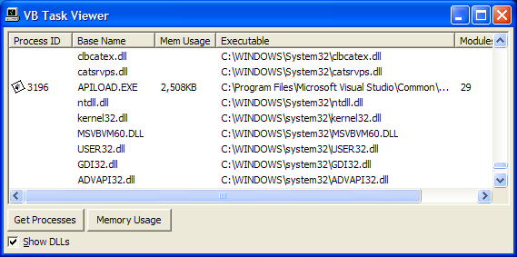

VB PSAPI Demonstration (12K)
VB PSAPI Demonstration (12K)
 16 Aug 1998
16 Aug 1998
First Posted

Using PSAPI to get a complete task list and memory usage.
Get information about running processes and DLLs on NT/2000/XP systems.
PSAPI.DLL is a DLL provided for NT/2000/XP systems which greatly simplifies the job of getting task list and memory usage information. The information is also available in the dyamic data section of the registry, but the format is fairly obstructive and it is a considerable task to extract it programmatically.
This tip demonstrates how to use the API to get a list of processes, investigate the memory they are using and the DLLs loaded into their working set.
Using PSAPI
There are four calls within PSAPI you can use to find information about running processes:
- EnumProcesses
This returns a list of handles to processes running on the system as an array. - GetProcessMemoryInfo
Returns memory usage information for a process, such as its current and peak Working Set and page file usage. - EnumProcessModules
Given a handle to a process, this returns all the modules running within the process. The first module is the executable running the process, and subsequent handles describe DLLs loaded into the process. - GetModuleBaseName
This function returns the short name for a module, typically the file name portion of the EXE or DLL. - GetModuleFileNameEx
Returns the full file name of a module including its path.
Declares for these functions aren't available in the VB API Viewer, but luckily they are easy to translate to VB:
Type MODULEINFO lpBaseOfDLL As Long SizeOfImage As Long EntryPoint As Long End Type Type PROCESS_MEMORY_COUNTERS cb As Long PageFaultCount As Long PeakWorkingSetSize As Long WorkingSetSize As Long QuotaPeakPagedPoolUsage As Long QuotaPagedPoolUsage As Long QuotaPeakNonPagedPoolUsage As Long QuotaNonPagedPoolUsage As Long PagefileUsage As Long PeakPagefileUsage As Long End Type Type PSAPI_WS_WATCH_INFORMATION FaultingPc As Long FaultingVa As Long End Type Public Declare Function EmptyWorkingSet Lib "PSAPI.DLL" ( _ ByVal hProcess As Long _ ) As Long Public Declare Function EnumDeviceDrivers Lib "PSAPI.DLL" ( _ lpImageBase() As Long, _ ByVal cb As Long, _ lpcbNeeded As Long _ ) As Long Public Declare Function EnumProcesses Lib "PSAPI.DLL" ( _ lpidProcess As Long, _ ByVal cb As Long, _ cbNeeded As Long _ ) As Long Public Declare Function EnumProcessModules Lib "PSAPI.DLL" _ (ByVal hProcess As Long, _ lphModule As Long, _ ByVal cb As Long, _ lpcbNeeded As Long _ ) As Long Public Declare Function GetDeviceDriverBaseName Lib "PSAPI.DLL" Alias "GetDeviceDriverBaseNameA" _ (ByVal ImageBase As Long, _ ByVal lpBaseName As String, _ ByVal nSize As Long _ ) As Long Public Declare Function GetDeviceDriverFileName Lib "PSAPI.DLL" Alias "GetDeviceDriverFileNameA" _ (ByVal ImageBase As Long, _ ByVal lpFileName As String, _ ByVal nSize As Long _ ) As Long Public Declare Function GetMappedFileName Lib "PSAPI.DLL" Alias "GetMappedFileNameA" _ (ByVal hProcess As Long, _ ByVal lpv As Long, _ ByVal lpFileName As String, _ ByVal nSize As Long _ ) As Long Public Declare Function GetModuleBaseName Lib "PSAPI.DLL" Alias "GetModuleBaseNameA" _ (ByVal hProcess As Long, _ ByVal hModule As Long, _ ByVal lpFileName As String, _ ByVal nSize As Long _ ) As Long Public Declare Function GetModuleFileNameEx Lib "PSAPI.DLL" Alias "GetModuleFileNameExA" _ (ByVal hProcess As Long, _ ByVal hModule As Long, _ ByVal lpFileName As String, _ ByVal nSize As Long _ ) As Long Public Declare Function GetModuleInformation Lib "PSAPI.DLL" _ (ByVal hProcess As Long, _ ByVal hModule As Long, _ lpmodinfo As MODULEINFO, _ ByVal cb As Long _ ) As Long Public Declare Function GetProcessMemoryInfo Lib "PSAPI.DLL" _ (ByVal hProcess As Long, _ ppsmemCounters As PROCESS_MEMORY_COUNTERS, _ ByVal cb As Long _ ) As Long Public Declare Function GetWsChanges Lib "PSAPI.DLL" _ (ByVal hProcess As Long, _ lpWatchInfo As PSAPI_WS_WATCH_INFORMATION, _ ByVal cb As Long _ ) As Long Public Declare Function InitializeProcessForWsWatch Lib "PSAPI.DLL" _ (ByVal hProcess As Long _ ) As Long Public Declare Function QueryWorkingSet Lib "PSAPI.DLL" _ (ByVal hProcess As Long, _ pv As Long, _ ByVal cb As Long _ ) As Long
Using the API
This example demonstrates how to enumerate all running process and provides information about each of the modules running, along with their working set usage. The first thing to do is to get a list of running processes. The EnumProcesses takes an array which you must pre-initialize to the maximum number of processes you can work with, then tells you how many were actually returned:
Dim aProcesses() As Long
Dim cbNeeded As Long
Dim cProcesses As Long
ReDim aProcesses(0 To 1023) As Long
If (EnumProcesses( _
aProcesses(0), 1024 * 4, cbNeeded) <> 0) Then
'// Calculate how many process identifiers were returned.
cProcesses = cbNeeded / 4
...
End If
Having got a process list, you can then find the specific information about each process. The first thing to do is to convert the process ID into a handle to a process:
Private Const MAX_PATH = 260
Private Declare Function OpenProcess Lib "kernel32" ( _
ByVal dwDesiredAccess As Long, ByVal bInheritHandle As Long, _
ByVal dwProcessId As Long) As Long
Private Declare Function CloseHandle Lib "kernel32" ( _
ByVal hObject As Long) As Long
Private Const PROCESS_TERMINATE = &H1
Private Const PROCESS_CREATE_THREAD = &H2
Private Const PROCESS_VM_OPERATION = &H8
Private Const PROCESS_VM_READ = &H10
Private Const PROCESS_VM_WRITE = &H20
Private Const PROCESS_DUP_HANDLE = &H40
Private Const PROCESS_CREATE_PROCESS = &H80
Private Const PROCESS_SET_QUOTA = &H100
Private Const PROCESS_SET_INFORMATION = &H200
Private Const PROCESS_QUERY_INFORMATION = &H400
Dim hProcess As Long
hProcess = OpenProcess(PROCESS_QUERY_INFORMATION Or _
PROCESS_VM_READ, _
0, lProcessID)
...
CloseHandle hProcess
Once you have a handle, you can then find the memory usage information and a list of modules associated with the process. The list of modules is obtained using an array in the same manner as getting a list of processes in the first place:
Dim hMod(0 To 1023) As Long
Dim cbNeeded As Long
Dim cModules As Long
Dim tPMC As PROCESS_MEMORY_COUNTERS
Dim workingSetSize As Long
GetProcessMemoryInfo(hProcess, tPMC, Len(tPMC)
workingSetSize = tPMC.WorkingSetSize
If (hProcess <> 0) Then
If (EnumProcessModules(hProcess, hMod(0), 1024 * 4, _
cbNeeded)) Then
cModules = cbNeeded \ 4
...
End If
End If
Then you can find the name, file name and information about the memory usage of the process:
Dim szProcessName As String
Dim processName As String
Dim processFileName As String
Dim lR As Long
For i = 0 To cModules - 1
szProcessName = String$(MAX_PATH, 0)
LSet szProcessName = "unknown"
lR = GetModuleBaseName(hProcess, hMod(i), szProcessName, lLen)
processName = szProcessName
szProcessName = String$(MAX_PATH, 0)
LSet szProcessName = "unknown"
lR = GetModuleFileNameEx(hProcess, hMod(i), szProcessName, lLen)
processFileName = szProcessName
Next i
The demonstration application uses these techniques to present a complete process list with names, file names and memory usage in a ListView.
Conclusion
This tip demonstrates how to use the PSAPI.DLL functions under Windows NT/2000/XP to investigate running processes. You can use this information to monitor memory usage of an application, or to look into which DLLs a particular application is using. See also the GUI Resource Tracer utility which uses these techniques to provide a correct task list matched against the running processes.